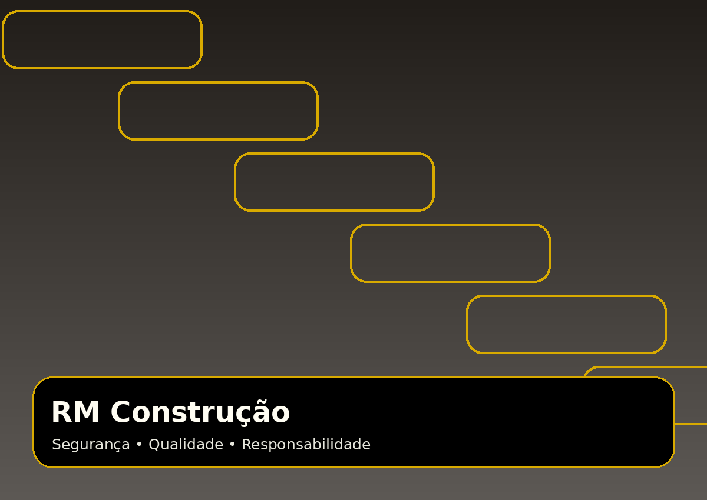

NR 35
Medidas de proteção para atividades em altura, com foco em prevenção, preparo e segurança da equipe.
A RM Construção executa obras residenciais, comerciais e industriais com equipe qualificada, processos seguros e acabamento profissional em cada etapa do projeto.

Segurança não é detalhe. É parte do processo. A RM atua com treinamentos, controle de riscos e documentações que apoiam uma execução mais responsável e profissional.
Medidas de proteção para atividades em altura, com foco em prevenção, preparo e segurança da equipe.
Organização do canteiro, uso de EPIs, andaimes, escadas, plataformas e prevenção de acidentes.
Gerenciamento de riscos para identificar, controlar e reduzir perigos durante a execução dos serviços.
Monitoramento da saúde ocupacional com exames e acompanhamento conforme exigências legais.
Da preparação ao acabamento, a RM prioriza prazo, organização, responsabilidade e comunicação clara para entregar uma obra com mais tranquilidade para o cliente.
Conhecer a empresaProfissionais qualificados para atuar com segurança e responsabilidade.
Experiência para adaptar a execução ao porte e necessidade de cada projeto.
Cuidado visual, precisão técnica e atenção aos detalhes finais da obra.
Construção, reforma e acabamento com planejamento, técnica e presença profissional.
Execução e acompanhamento de etapas estruturais e técnicas da obra.
Preparação, correção e acabamento para ambientes internos e externos.
Soluções modernas para divisórias, forros, sancas e adequações de espaços.
Readequação de ambientes com organização, prazo e execução responsável.
Detalhes finais que elevam o padrão visual e funcional do projeto.
Equipe preparada para atividades técnicas com uso correto de segurança.
Indicadores institucionais para reforçar confiança, experiência e capacidade de atendimento.
“Equipe organizada, cuidadosa e comprometida com a qualidade do acabamento.”
Cliente residencial“Serviço executado com responsabilidade, segurança e ótima comunicação.”
Cliente comercial“Profissionais preparados para lidar com demandas técnicas e prazos.”
Cliente industrialFale com a RM Construção e receba orientação para iniciar com segurança, clareza e padrão profissional.
Entrar em contato